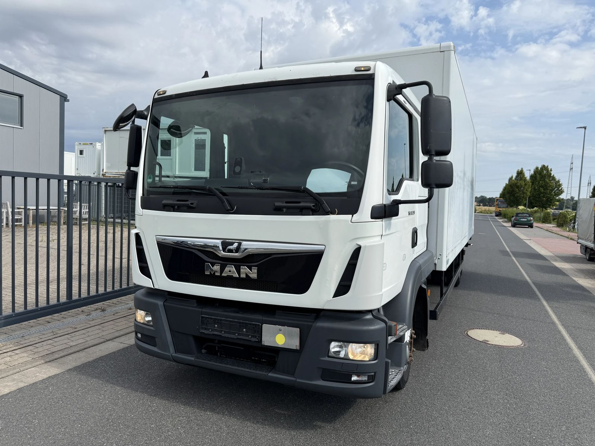
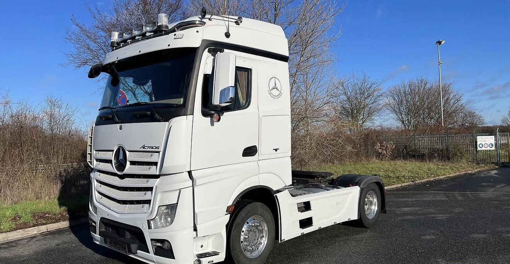

Blog
Blog rund um Nutzfahrzeuge
Wissen zu Ankauf, Verkauf und Export von Nutzfahrzeugen.
-

Nutzfahrzeug verkaufen: Was Sie beachten müssen
Maut-Gerät, Fahrtenschreiber, Telematik, Halterwechsel: Wer ein Nutzfahrzeug verkauft, hat mehr zu erledigen als beim PKW. Die Verkaufswege im Vergleich und eine Checkliste für die Übergabe.
Weiterlesen -

LKW Inzahlungnahme: Wann sie sich lohnt und wann nicht
Der Händler bietet viel für Ihren alten LKW, und trotzdem kann das Geschäft teuer sein. Wie die Inzahlungnahme funktioniert, wann sie sich lohnt und worauf Sie beim Anrechnungswert achten sollten.
Weiterlesen -

LKW Ankauf: So läuft er ab und darauf sollten Sie achten
Wir kaufen Ihren LKW, das versprechen viele. Wer steckt dahinter, wie entsteht das Angebot und woran erkennen Sie einen seriösen Käufer? Ein Überblick für alle, die einen gebrauchten LKW verkaufen möchten.
Weiterlesen -

Euro 3 bis Euro 6: Schadstoffklassen bei LKW und Bus erklärt
Zwei LKW, gleiches Baujahr, aber eine andere Maut: Die Euro-Norm entscheidet, was ein Kilometer kostet und wo ein Fahrzeug fahren darf. Wir erklären Euro 3 bis Euro 6 und zeigen, wo die Norm im Fahrzeugschein steht.
Weiterlesen -

Fahrzeugklassen N1, N2, N3 und M2, M3: Nutzfahrzeuge erklärt
LKW, Transporter, Omnibus, Reisebus: Im Fahrzeugschein steht dafür ein kurzer Code wie N2 oder M3. Wir erklären, was die Fahrzeugklassen bedeuten und warum sie für Führerschein, Maut und Verkauf zählen.
Weiterlesen -

Flottenverkauf im Paket: Warum er sich für Firmen lohnt
Zwanzig Fahrzeuge sollen raus, die neuen kommen in drei Monaten. Warum sich ein Paketverkauf für Firmen meist lohnt, wann der Einzelverkauf mehr bringt und woran Sie einen guten Käufer erkennen.
Weiterlesen -

Linienbus, Überlandbus, Reisebus: Die Unterschiede erklärt
Von außen sehen viele Busse ähnlich aus. Innen sind Linienbus, Überlandbus und Reisebus für ganz verschiedene Aufgaben gebaut. Wir zeigen, woran man sie unterscheidet.
Weiterlesen -

Mercedes-Benz Sprinter 519 als Bus: Was den Kleinbus ausmacht
Shuttle, Schülerverkehr, Vereinsbus: Der Sprinter 519 ist der Klassiker unter den Kleinbussen. Was die Zahl bedeutet, warum 5 Tonnen so wichtig sind und welcher Führerschein nötig ist.
Weiterlesen -

LKW-Stau an der Grenze Türkei–Bulgarien: Was dahintersteckt
Tagelange Wartezeiten und Schlangen von über 20 Kilometern: warum sich vor Kapıkule und Kapitan Andreevo die LKW stauen und was das für Transporte zwischen Deutschland und der Türkei bedeutet.
Weiterlesen -

Volvo Sattelzugmaschinen: FH, FH16 und FM im Überblick
Vom FH12 aus dem Jahr 1993 bis zum FH Aero: was FH, FH16 und FM unterscheidet, was Zahlen wie 460 oder 500 bedeuten und welche Fahrerhäuser es gibt.
Weiterlesen -

Mercedes-Benz Antos: Der schwere Verteiler im Überblick
Zwischen Atego und Actros: wofür Mercedes-Benz den Antos gebaut hat, was Typen wie 1840 oder 2543 bedeuten und woran Sie ihn vom Actros unterscheiden.
Weiterlesen -

Arocs oder Actros? Die Unterschiede im Überblick
Gleiche Plattform, andere Aufgabe: woran Sie einen Arocs von einem Actros unterscheiden, was unter dem Fahrerhaus anders ist und warum es vor 2013 keinen Arocs gab.
Weiterlesen -

MAN 12-Tonner: TGL oder TGM? Typen und Generationen
TGL oder TGM, 12.220 oder 12.250, BB oder BL: was die Bezeichnungen beim MAN 12-Tonner bedeuten und warum im Fahrzeugschein so oft 11,99 Tonnen stehen.
Weiterlesen -

Mercedes-Benz Atego: Generationen und Typen im Überblick
Vom ersten Atego 1998 bis zur heutigen Euro-VI-Baureihe: was hinter Typen wie 818 oder 1224 steckt und warum 7,49 Tonnen so oft im Fahrzeugschein stehen.
Weiterlesen -

Actros MP1 bis MP5: Die Generationen im Überblick
Vom ersten Actros 1996 bis zum MP5 mit Kameras statt Spiegeln: was die fünf Generationen unterscheidet und woran Sie Ihren Actros erkennen.
Weiterlesen -

Nutzfahrzeuge im Alltag: Warum ohne LKW und Bus nichts läuft
Brötchen, Busfahrt, Baustelle, Müllabfuhr: Ein ganz normaler Tag zeigt, wie sehr unser Alltag an Nutzfahrzeugen hängt.
Weiterlesen
Hier schreiben wir über das, was uns jeden Tag beschäftigt: worauf es beim Verkauf eines LKW oder Busses ankommt, wie ein Export in die EU oder in Drittländer abläuft und was sich im Nutzfahrzeughandel tut – aus über 30 Jahren Erfahrung.
Kontakt